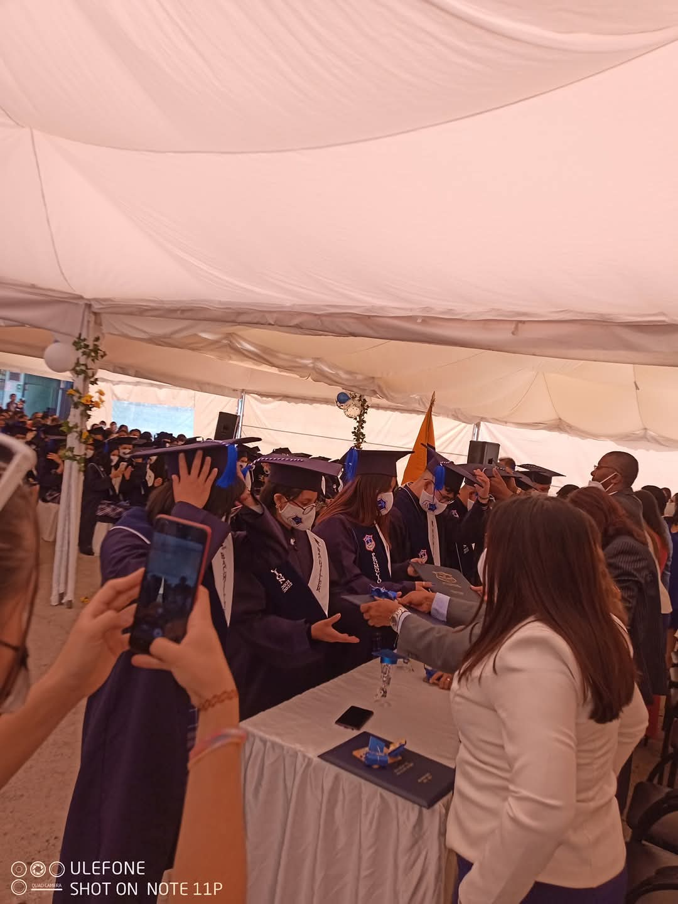

Datos Personales
Información Personal
-
Nombres completos
Alisson Estefania Ayo Bonilla
-
Fecha de nacimiento
16 de Enero del 2005
-
Edad
20 años
-
Cédula de identidad
1728671502
-
Correo electrónico
aeayo@espe.edu.ec
-
Nacionalidad
Ecuatoriana
Redes Sociales


Datos Academicos
Formación Escolar y Colegial
Unidad Educativa Abelardo Flores
Realicé toda mi formación básica y secundaria en esta institución ubicada en el centro de Conocoto. A lo largo de estos años, participé activamente en actividades como oratoria, declamación y concursos de lectura, desarrollando habilidades comunicativas y creativas.
Resumen de Estudios
- Primaria: 2009 - 2016
- Secundaria: 2017 - 2022
- Especialización: Ciencias
Formación Universitaria

Actualmente curso el cuarto semestre de Ingeniería en Software en la Universidad de las Fuerzas Armadas ESPE, una institución reconocida por su excelencia académica. Mi formación combina conocimientos teóricos y prácticos a través de asignaturas clave como:
- Programación Web
- Base de Datos
- Computación Digital
- Modelos de Procesos
- Métodos Numéricos
Estas materias fortalecen mis capacidades técnicas, analíticas y de resolución de problemas en el ámbito del desarrollo de software.